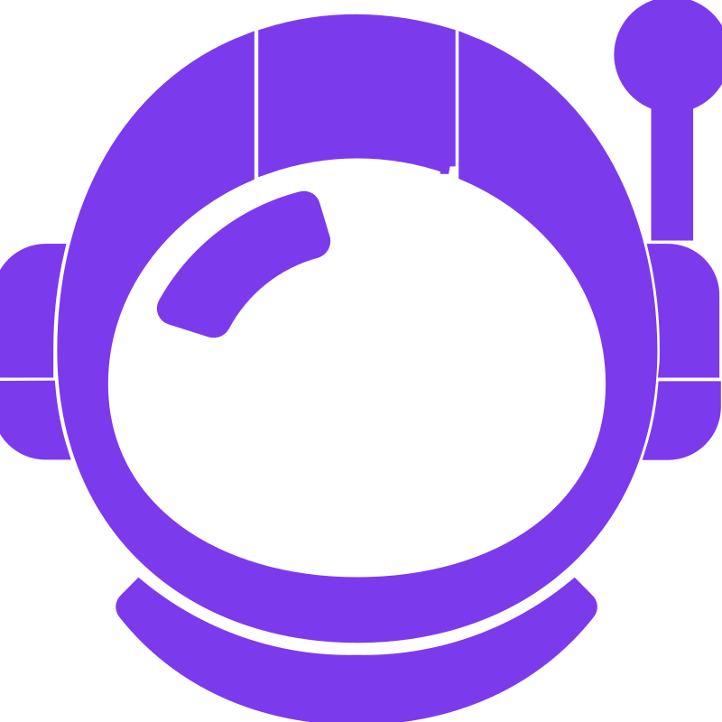
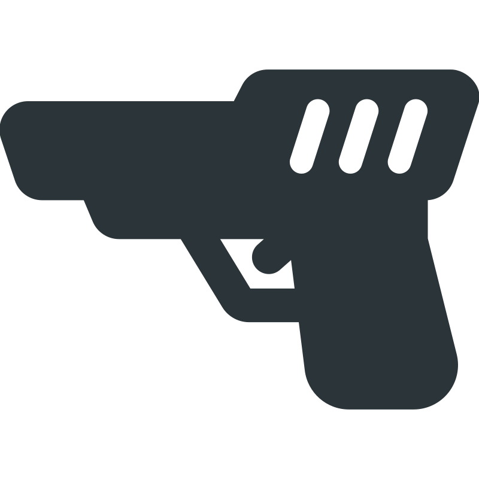
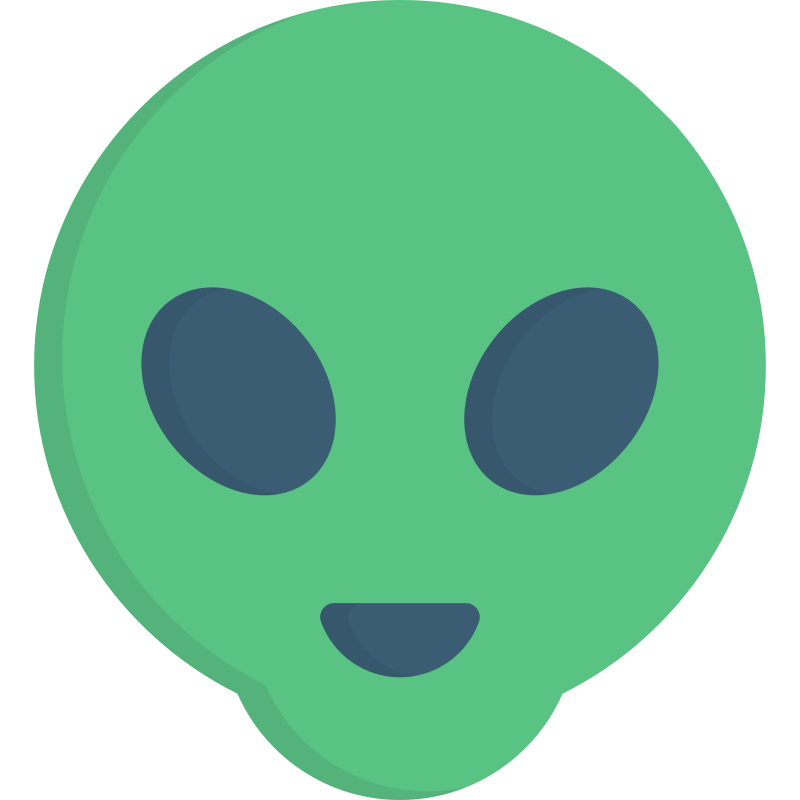

Explore planetas hostis, enfrente criaturas alienígenas e descubra segredos ocultos.

A aventura sci-fi que deu origem ao gênero “metroidvania”.
Lançado em 1986 para o NES, Metroid colocou os jogadores no papel de Samus Aran, uma caçadora de recompensas em missão no planeta Zebes para derrotar os Piratas Espaciais.
Com exploração não linear, upgrades progressivos e atmosfera sombria, o jogo redefiniu a forma como aventuras de ação eram construídas.
Descrição baseada na história original do jogo.


Samus Aran
Ação Zebes
Alienígenas